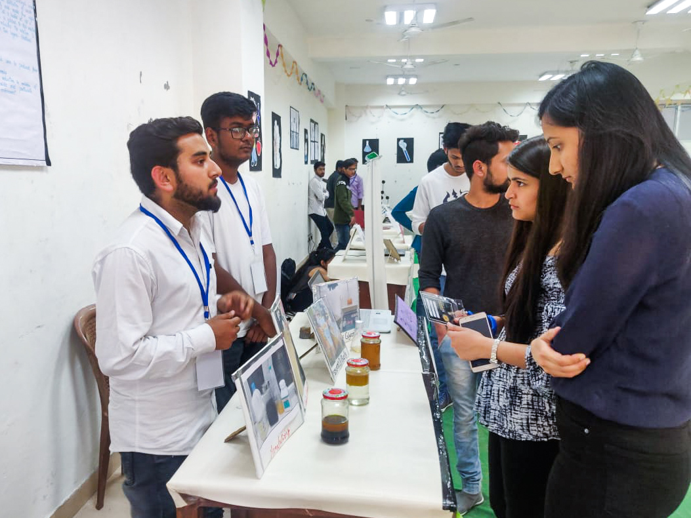

Gallery




Team Hermetica has come up with a new technique, Biofuel from Bio-waste. This project aims at extracting the majority of energy from the waste food and turn it to fuel and electricity.

Team Hermetica has come up with a project on the Thermal management system of battery. We have designed a jacket containing Nanofluid. This Nanofluid has a high cooling tendency, lowering the battery's temperature.
Even though membrane processes are innovative, fouling is the biggest roadblock in its way. To overcome this issue, we have designed an effective solution through our project.

A boat that moves like a snake and is operated remotely, travelling freely through the environment and cleaning the oceans. We're using cellulose sheets packed with polysulphide polymer, which is made up of refining and petroleum by products.
Marking the onset of NIMBUS 2021, Team Hermetica is delighted to present its blueprint on ‘STABLE SALT REACTOR', where an integral nuclear reactor is designed with the core comprising of assemblies of fuel tubes immersed in a coolant salt tank.
“Pure Water” is the world's first and foremost medicine, but water supplies are severely polluted, posing a serious threat. So, Team Hermetica has come up with a revolutionary technique of Water Purification using TiO2 Powder and Photocatalytic Activity.